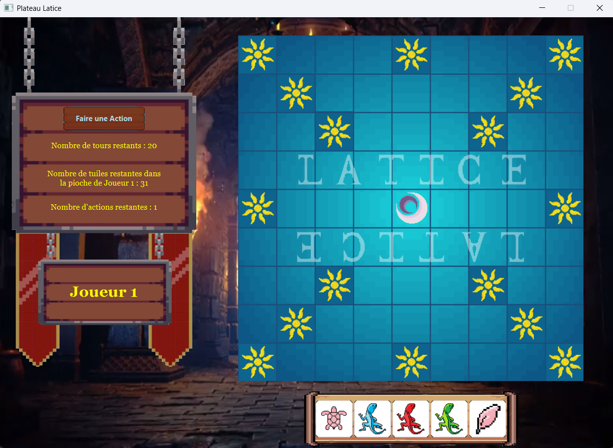
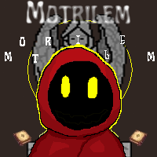

Latice – Jeu de plateau en JavaFX

Reproduction du jeu Latice en JavaFX dans le cadre d’un projet en équipe.
JavaJavaFX
Étudiant en 2ᵉ année de BUT Informatique à l’IUT du Limousin.

Reproduction du jeu Latice en JavaFX dans le cadre d’un projet en équipe.

Développement de plusieurs mini‑jeux jouables en terminal.

Création d’un jeu 2D personnel sous Unity, encore en développement.
Java, Python, C#, JavaFX, Unity.
Structures de données, logique algorithmique, optimisation Unity.
Linux, configuration système, scripts.
SQL, modélisation, requêtes complexes.
Organisation, travail en équipe, méthodes agiles.
Git, communication, coordination en équipe.
AC11 : Implémenter des conceptions simples
AC12 : Élaborer des conceptions simples
AC13 : Faire des essais et analyser les résultats
AC14 : Développer des interfaces utilisateurs
Projets : Latice, Mini‑Jeux, Motrilem
AC21 : Choisir des structures de données adaptées
AC22 : Utiliser des algorithmes adaptés
AC23 : Améliorer les performances
Projets : Mini‑Jeux, Motrilem
AC31 : Installer un système
AC32 : Configurer un système
AC33 : Automatiser des tâches
Projets : TP Linux
AC41 : Modéliser une base de données
AC42 : Manipuler des données
AC43 : Concevoir des requêtes
Projets : SAE SQL
AC51 : Organiser un projet
AC52 : Travailler en équipe
AC53 : Communiquer
Projets : Latice, Mini‑Jeux
AC61 : Utiliser des outils collaboratifs
AC62 : Versionner du code
AC63 : Participer à un travail collectif
Projets : Latice, Mini‑Jeux, Motrilem
Étudiant passionné par le développement logiciel, j’aime créer des projets variés : interfaces graphiques, jeux vidéo, scripts Python, applications Java et projets Unity.
Je cherche à progresser continuellement et à comprendre un projet dans sa globalité. J’accorde une grande importance à la cohérence visuelle, à la fluidité d’un parcours et à la qualité technique d’un projet.
Au fil de mes expériences, j’ai appris à structurer mon code, à concevoir des architectures claires et à développer des interfaces pensées pour l’utilisateur. J’aime explorer de nouvelles technologies, expérimenter, corriger, améliorer et repousser les limites de ce que je sais faire.
Mon objectif est de devenir un développeur polyvalent, capable de créer des projets complets, immersifs et bien construits, tout en continuant à apprendre et à affiner mes compétences.
Envie de collaborer ? Envoie-moi un message :